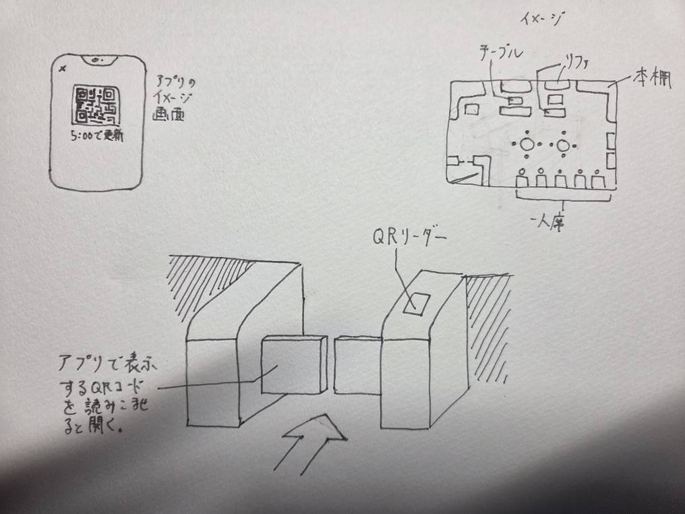

24時間空いてる無人ラウンジ
困っていたこと
この夏休みを過ごしていて、自分は特に予定や目的もなく、暇だから友達と会ったり、
予定までの時間が中途半端に暇だったり、深夜に友達といて帰る気分ではないけど
ちょうどいい飲食店は空いていない。みたいなことが多々ありました。
課題を通したビジネス

そこで自分が考えたのは、24時間空いてる無人ラウンジです。テーブル、ソファー、
トイレやテレビ、多少の漫画や雑誌を置いて、軽く時間を潰せる簡素なラウンジです。
これを24時間無人で運営していつでも自由に入れるようにします。そしてこれをサブ
スク化することでビジネスとして採算を取れるようにします。近年、チョコザップや
古着屋などの無人店舗やサブスクが増えてきています。これらのビジネスは利用者の
明確な目的と需要を満たすべく作られていますが、それなその逆の目的のない人に向
けた場所やサブスクも案外うまくいくんじゃないかと思いました。また、いろんな年
代の人にも需要があるんじゃないかと思いました。そしてネカフェや漫喫と違い、より
気軽に、いつでも、そして何より複数人のグループで利用できるのがいいとこじゃない
かと思いました。